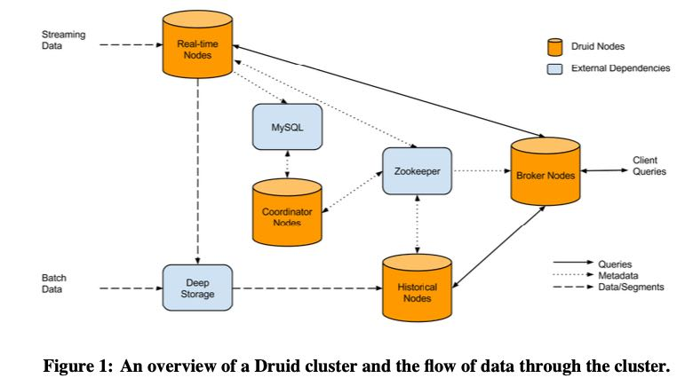

Druid: A Real-time Analytical Data Store
https://dl.acm.org/doi/10.1145/2588555.2595631
整体下来的感觉是，从这个系统架构上来看，它做的事情主要聚焦在如何利用分布式管理好数据，并且在数据插入的阶段就做好预聚合，但是缺少一个MPP系统在上面做复杂分析。提供的是HTTP REST查询接口而不是SQL就可以反应这点，更加复杂的query是没有办法做到的。好像也没有什么特别的亮点，可能就是在解决Hadoop时代没有可用的快速的数仓问题吧。
下面是名字的由来和架构图，看上去也不是特别复杂，几个组成部分：
RT Nodes 这个专门接受实时数据并且按照时间范围进行分片，然后将数据状态发送到ZK上。RT Nodes 会对于一个时间范围内分片数据进行聚合和压缩称为 Segment. 通常它的数据来源是Kafka，为了考虑数据延迟，RT Nodes在时间范围内之后等待一段时间才会认为这个Segment的数据ready了。
The name Druid comes from the Druid class in many role-playing games: it is a shape-shifter, capable of taking on many different forms to fulfill various different roles in a group. The composition of and flow of data in a Druid cluster are shown in Figure 1.

准备好的Segment数据就认为是历史数据了，可以放到HT Nodes上进行查询。如何将实时数据导入到HT Node上是通过Deep Storage做中转的，这个Deep Storage可以是类似S3或者是HDFS这样的东西，高吞吐并不要求延迟。HT Node通过和ZK交互，知道自己要加载哪些Segment由自己来进行管理。把所有的文件元信息放在ZK上之后，Broker Node（在这里是查询节点）就可以通过去查询ZK来知道查询需要去看哪些文件和节点。引入MySQL主要是为了存储：操作信息和Segment元信息。
文件存储格式上没有什么特别的东西，对于字符串做了索引然后按照bitmap进行存储和压缩。存储引用使用in-memory以及mmap-based engine. 居然还使用mmap，看来这个东西的内存使用上不怎么讲究。Query API是通过HTTP REST/JSON来做的，允许做条件筛选和聚合，但是功能比较简单。